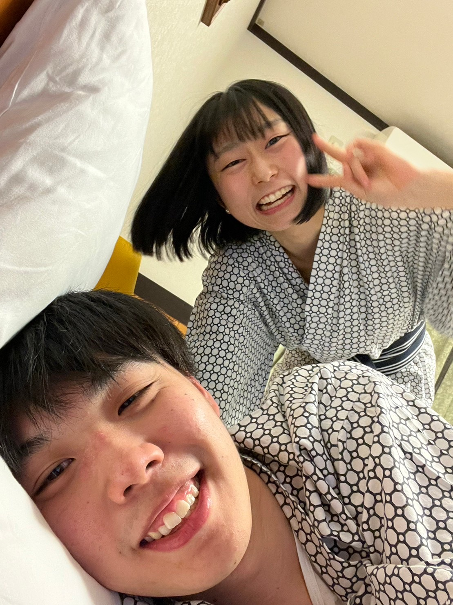
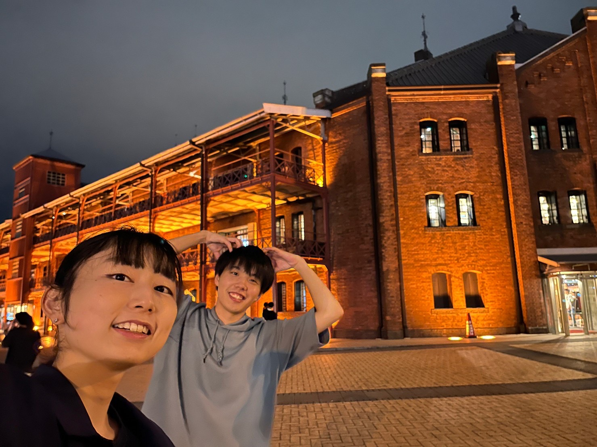
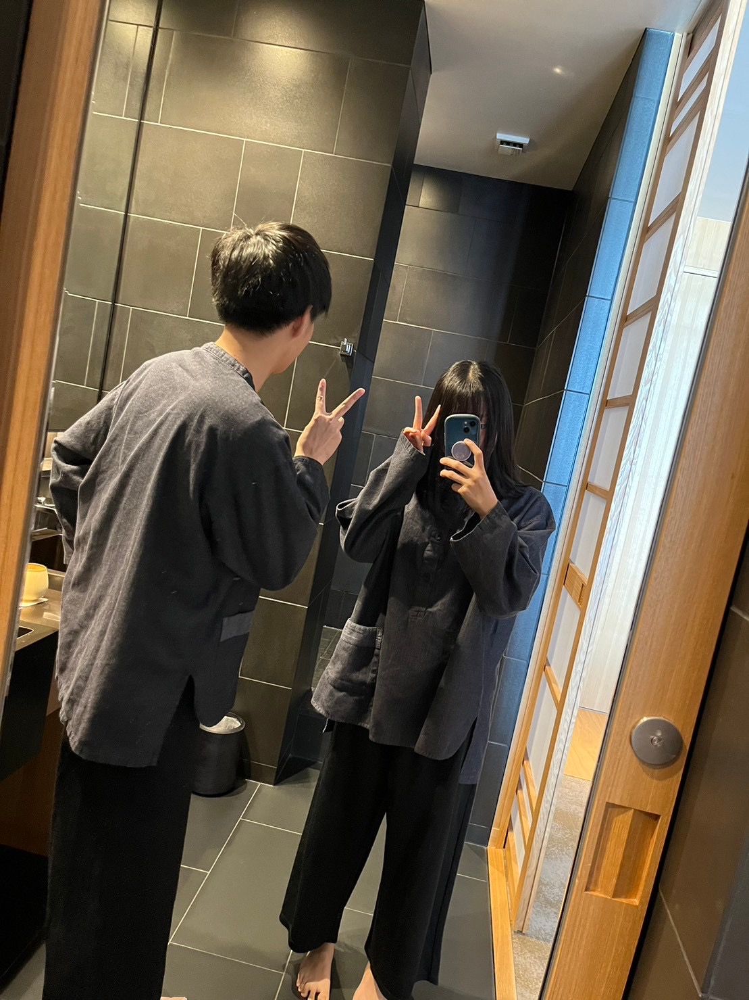

2023.02.25
Disney
Disney
学生最後のディズニー。初めて一緒に行ったディズニーの写真の比較！
こう見ると、もっと寄せれたかな？笑

2023.03.21
Arima
有馬温泉
生せんべい食べれなかったから、またリベンジ行かなきゃだよ！
この無邪気な笑顔の彩乃、可愛い。大好き。
...げんは花粉症なのかなんなのか目が死んでる。


2023.03.22
kobe
神戸
有馬温泉からの甲子園！
電車の中でWBCの決勝見て盛り上がったね笑
高校野球だけど、彩乃初めての甲子園球場！
有馬の前に行ったけど、アンパンマンミュージアム！似てる！可愛い！


2023.09.23
Yokohama
横浜


2023.11.12
Atami
6th anniversary
５周年に続けてまたまた静岡。行ってみたいホテルに着いてきてくれてありがとう。
そして当日は思いっきり体調崩してごめんなさいでした。
色々なホテル行ってきたけど、過去最高値です。非日常的な体験ができたし、おしゃれなコースディナーも体験出来て、
あやのにとっても良い経験になってたら嬉しいです。
もっと体調が良ければもっと楽しめたかな。と少し後悔中。。。またチャンスがあれば行きたい。。


おまけ
pictures
おまけの写真
神宮球場の彩乃。この写真お気に入り。
金山のチームラボの彩乃